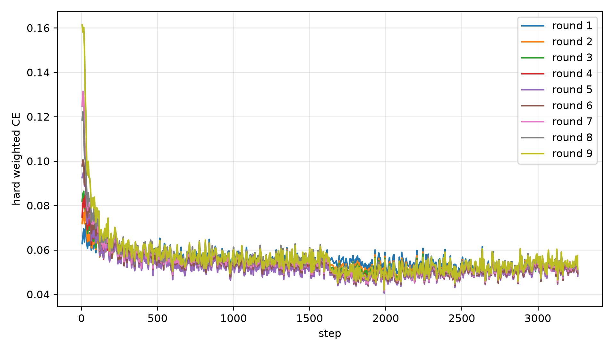
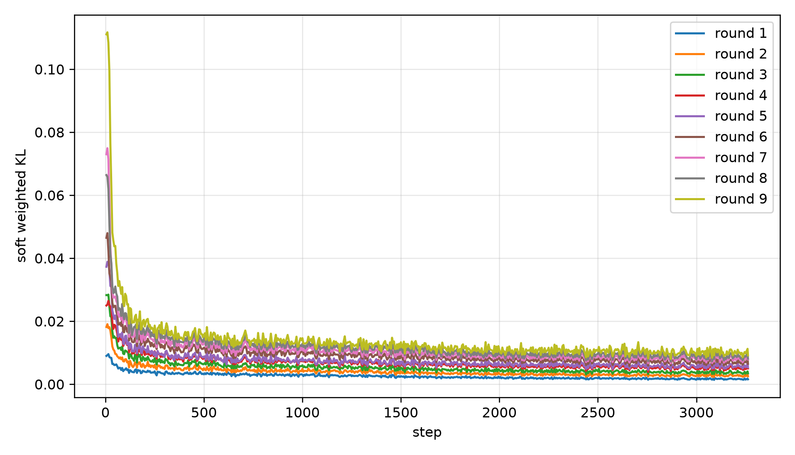

Probe
在固定 10×10 probe 上临时绕过每个候选层，模型文件保持不变。
TEMPORARY BYPASSScalpel 不是一次删掉一批层。它每轮只定位一个安全切口， 只更新切口前一层来修复局部边界，再基于恢复后的新模型重新寻找下一层。
每轮以删层前的当前模型作为冻结 teacher；student 改变后，安全层也必须重新定位。
在固定 10×10 probe 上临时绕过每个候选层，模型文件保持不变。
TEMPORARY BYPASS同时衡量任务后悔值与词表分布漂移，避免一个好指标掩盖另一项风险。
MINIMAX RISK物理删除风险最低的一层，更新 config、attention 索引与原始层映射。
STRUCTURAL DELETE冻结本轮 teacher 与 student 其余参数，只训练删除边界前一层，完成局部恢复。
LOCAL BOUNDARY KD固定 probe 集保证候选层比较一致。生成准确率下降和 logits 漂移都归一化到 [0, 1]， 每个 repeat 取两者最大值，再跨 10 个 repeat 求平均。得分最低的层才会被真正删除。
Rᵣ,ₗ = clip((Aʳᵉᶠ − Aᶜᵃⁿᵈ) / Aʳᵉᶠ)Jᵣ,ₗ = weighted JS / log 2Qᵣ,ₗ = max(Rᵣ,ₗ, Jᵣ,ₗ)完整验证集 2,609 条样本；速度和准确率均为每轮 post-recovery 模型实测。
10 个业务字段共同构成 macro accuracy。Round 09 在毛发状态和整体身体姿态上略有提升， 主要损失集中在尾部与垂直位置判断。
Teacher 是本轮删层前的模型；Student 仅解冻第 i−1 层，其余参数全部保持冻结。
从本轮删层前模型读取被删除层的边界输出，并保持冻结。
只更新切口前一层，使其软分布逼近 teacher 边界。
ℒboundary = weighted KL(qᵀᵢ ∥ qˢᵢ₋₁)
每条样本先按有效 token 权重归一化，再对 batch 求平均。
action · body · ears · tail · face · fur
cats_visible
default · environment
JSON format characters
Round 01 — 09

Round 01 — 09

选择一个 Round，观察 28 层原始模型如何逐步变成 19 层 student。
| Round | 删除原始层 | 剩余层 | Macro Acc. | Δ Accuracy | Speed | Speed-up | Probe Risk |
|---|
Recovery 数据针对猫姿态 JSON 任务。MMLU / C-Eval 显示，持续删层仍会显著损伤通用纯文本选择题能力。
先固定 probe 与实验指纹，再启动支持断点续跑的九轮编排器。
PYTHONPATH="$PROJECT_ROOT" "$PYTHON_BIN" \
-m highway.prune_prepare \
--model "$REFERENCE_MODEL" \
--train-data "$TRAIN_JSON" \
--val-data "$VAL_JSON" \
--run-dir "$RUN_DIR" \
--repeats 10 \
--samples-per-repeat 10 \
--rounds 9 \
--recovery-epochs 2PYTHONPATH="$PROJECT_ROOT" CUDA_VISIBLE_DEVICES=0 \
"$PYTHON_BIN" -m highway \
--project-root "$PROJECT_ROOT" \
--python "$PYTHON_BIN" \
--eval-script "$PROJECT_ROOT/sft_scripts/eval_universal_json.py" \
--reference-model "$REFERENCE_MODEL" \
--train-data "$TRAIN_JSON" \
--val-data "$VAL_JSON" \
--run-dir "$RUN_DIR" \
--model-root "$MODEL_ROOT" \
--rounds 9 \
--recovery-effective-batch-size 16 \
--recovery-epochs 2